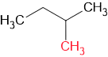
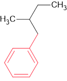
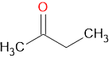
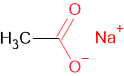
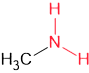
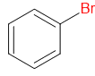

Witaj w grupach funkcyjnych
Grupa funkcyjna - podstawnik, który decyduje o właściwościach substancji. Są podstawą do nazywania związków.
W tej lekcji poznacie podstawniki oraz jak je nazywać.
Jakie mamy postawniki?
| Wzór | Użycie | Przykład | Wzór przykładu | Uwagi |
|---|---|---|---|---|
| -CH3 | Metylo- | 2-metylobutan |  | To samo się tyczy etylo- propylo- czy cykloproplo- |
| -OH | Hydroksy- lub -ol | cyklopropanol | -ol uzyywaj tylko w alkoholach | |
| -C6H5 | Fenylo- | 2-fenylobutan | Wiem, dziwne jest to, że jest benzen, a jednak fenol. | |
| -C7H7 | Benzylo- | 2-benzylobutan |  | O! A teraz jest toluen, a jednak teraz to jest benzen. |
| -CHO | -al | etanal |  |
- |
| >CO | -on | etanon |  | - |
| -COOH | Kwas--owy | Kwas propanowy |  |
- |
| -COOMe | -ian (metal w dopełniaczu) | etanian sodu |  | Me oznacza metal |
| -COOR | -ian (grupa funkcyjna wywodząca się od reszty węglowodorowej w dopełniaczu) | etanian etylu | R oznacza grupę węglowodorową | |
| -NO2 | Nitro- | metanian sodu | - | |
| -NH2 | Amino- lub (przymiotnik utworzony od grupy węglowodorowej)-amina | metyloamina |  | - |
| -SH | -(o)tiol | metanotiol | Lokant dajemy przed -tiol | |
| -CONH2 | Amid kwasu--owego lub -amid | Amid kwasu benzoesowego |  |
- | -X | (halogen)o- | Bromobenzen |  | X znaczy halogen |
Jak już poznaliśmy czym są grupy i jakie rozróżniamy to teraz powiemy o tym czym jest lokant: Jest to liczba(nie zawsze liczba) porzątkowa która określa miejsce występowania podstawnika np. 2-bromopropan lub butan-2-on może być to też litera jak p-nitrotoluen czy o-metylofenol.
To chyba tyle. Ta lekcja jest tylko wyjaśnieniem nomenklatury której będziemy używać w późniejszych temetach. Między innymi w tym: